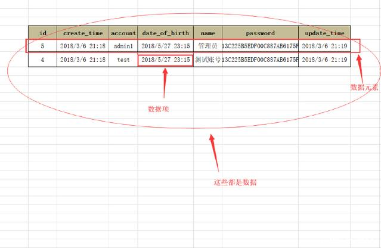
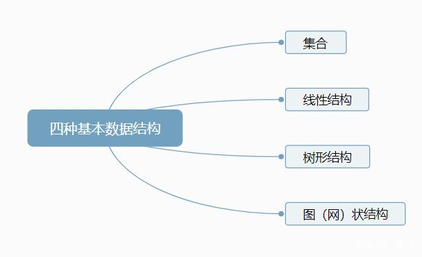
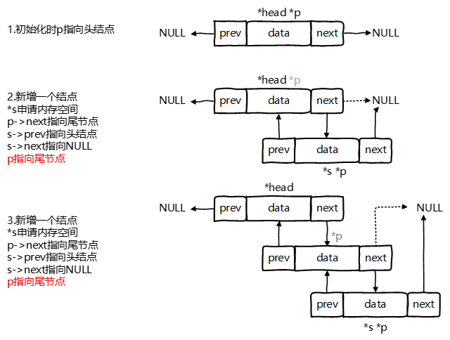
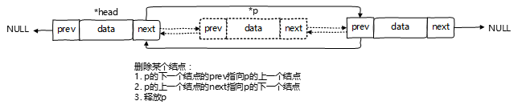

线性表
第一章 绪论
数据结构是相互之间存在一种或多种特定特定关系的数据元素的集合。
重要术语：
1、数据：对客观事物的符号表示，指所有能输入到计算机中并被计算机程序处理的符号的总称。
2、数据项：数据项是数据的不可分割的最小单位。
3、数据元素：数据的基本单位，在计算机中作为一个整体进行考虑和处理，一个数据元素由多个数据项组成。
4、数据对象：性质相同的数据元素的集合，是数据的一个子集。

数据结构的四种结构：

算法效率度量：
事后统计的方法：对运行结果进行统计分析，得出执行效率。
事前分析估算：估算算法的时间复杂度——算法的时间复杂度是一个函数，它定性描述了该算法的运行时间。这是一个关于代表算法输入值的字符串的长度的函数。
时间复杂度常用大O符号表述，如O(1),O(n),O(n)等，不包括这个函数的低阶项和首项系数。
一般我们最常用的办法是讨论算法在最坏情况下的时间复杂度。
常见的
O(1)<O(logn)<O(n)<O(nlogn)<O(n^2)
对数据进行操作：初始化、判断是否是空、存取、统计个数、遍历、插入、删除、查找、排序 ————用算法进行描述。
第二章 线性表
一、线性表的定义及特性
定义：线性表是具有相同类型的 n（≥0）个数据元素的有限序列
线性表的顺序存储（顺序表）和链式存储（链表）
1.顺序表（SeqList)使用一维数组一次存放书元素。
1 | /-------------线性表的动态分配顺序存储结构--------- |
一维数组占用一块内存空间，每个存储单元的地址是连续的，通过下标识别元素，它的下标就代表了他的存储单元序号，也就表示了它的位置。
查找顺序表中的元素是方便的，根据下标就可以取出要取的元素。
当顺序表的容量不够时，顺序表不能就地扩容，要申请另一个更大容量的数组进行数组元素复制。Java源代码中的ArrayList类扩容实现过程是：先申请增加的容量是原本容量的二分之一，生成一个原本容量的二分之三的内存地址，再将所有元素进行复制过去。
2.线性表的链式存储结构(链表LinkedList)是用若干地址分散的存储单元存储数据元素，逻辑上相邻的数据元素在物理位置上不一定相邻。
存储一个数据元素的存储单元成为结点Node，单链表的表示方式：结点（数据域，地址域）。
1 | //链式存储结构 |
二、线性表顺序讯相互及基本操作（插入、删除）
对于插入、删除元素：先根据下标找到相应位置，若插入元素，将新插入插入位置后，将被加入位置的旧元素及之后的元素向后移动，移动次序是由后向前。若删除元素，将要删除的元素删除，其后的元素向前移动。插入和删除的操作时间主要用于移动元素。
1 | /插入操作,插入一个元素到线性表的第i个位置 |
三、单链表的操作（插入、删除、查找、归并等）
对于单链表的操作：遍历操作是从第0个结点开始，沿着结点的Next链，依次访问单链表中的每个结点，并且每个节点只访问一次。插入（删除）操作：根据要插入（删除）的结点数，从第0个结点遍历找到要插入（删除）的位置，将要插入的数据元素插入（将要删除的元素删除），改变原来结点间的链接关系，不用移动数据元素。而操作所花的时间都在查找上面。
1 | //初始化链表 |
四、双向链表
单链表结点中只有一个指向其后继的指针，这使得单链表只能从头到尾依次顺序的向后遍历，若要访问某个结点的前驱，只能从头开始遍历，访问后继结点的时间复杂度为O(1)，访问前驱结点的时间复杂度为O(n)；为克服以上缺点，引入双链表，一个结点含有两个指针，分别指向其前驱结点和后继结点。
1 | //------线性表的双向链表存储结构---------- |
和单向链表相比有以下优势：
插入删除不需要移动元素外，可以原地插入删除
可以双向遍历
初始化+尾插法图示：
1 | //head始终指向头结点，p指向尾节点，方便后续算法使用 |

删除单个图示：
